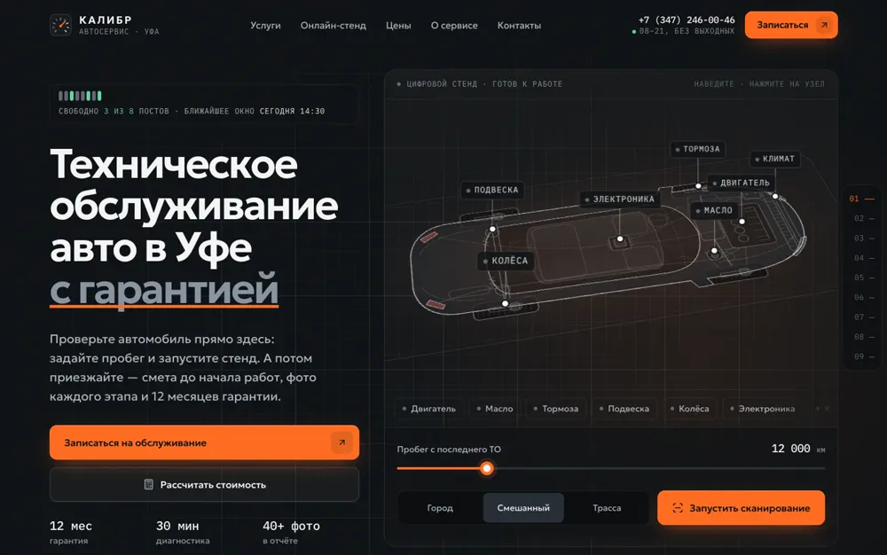
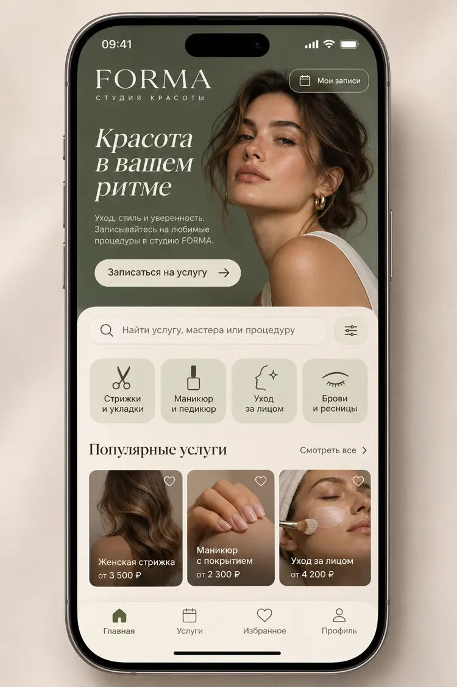

Х.А.Н
Сайт центра оздоровления · Уфа
Задача Помочь посетителю разобраться в услугах и перейти к записи.
Решение Собрал услуги, специалистов и цены в понятную структуру с заметными переходами к контакту.
Тимур Алекперов · независимый разработчик
Создаю сайты и проектирую интерфейсы ботов и приложений. Начинаю с задачи, а не с красивой картинки.

01 / РАБОТЫ
Один опубликованный сайт и три концепции сайтов. У каждого примера можно посмотреть вид на компьютере и телефоне; ниже — отдельные прототипы бота и приложений.
Сайт центра оздоровления · Уфа
Задача Помочь посетителю разобраться в услугах и перейти к записи.
Решение Собрал услуги, специалистов и цены в понятную структуру с заметными переходами к контакту.

Фитнес-клуб
Задача Показать атмосферу клуба и помочь выбрать тренировку.
Решение Собрал понятный путь от направлений и расписания к тренерам и абонементам.

Барбершоп
Задача Передать характер студии и сократить путь до записи.
Решение Показал услуги, цены и мастеров, выделил следующий шаг для посетителя.

Автосервис
Задача Объяснить состав обслуживания до визита в сервис.
Решение Продумал структуру услуг, подачу стоимости и путь к заявке.
02 / ПРОТОТИПЫ
Четыре концепции интерфейсов. Это демонстрации логики и визуального подхода — без заявлений о клиентах, запусках или опубликованных приложениях.
Привет! Помогу выбрать услугу и время для записи.
Что вам нужно?
Когда вам удобно?
Вы выбрали . Это демонстрация сценария, заявка не отправляется.
Показывает путь от первого сообщения до выбора услуги и времени. Попробуйте пройти диалог в макете.
МИНИ-ПРИЛОЖЕНИЕ
Выберите услугу и отправьте запрос на запись.
Ближайшее время
Демонстрация интерфейса; запрос не отправляется.
В мини-приложении человек выбирает услугу и удобное время, не теряясь в сообщениях.

03 / iOSТри экрана приложения студии красоты: каталог, запись к специалисту и управление визитами.
ПЛАН НА ДЕНЬ
Сегодня · ваш фокус
Один следующий шаг — без лишнего шума.
Экран задач с ясным прогрессом. Отметьте пункты, чтобы увидеть, как меняется состояние.
03 / НАПРАВЛЕНИЯ
Начинаем с задачи: кому нужен продукт, что человек должен сделать и какие данные нужны для этого шага.
Опубликованный проект отмечен отдельно. Бот и приложения выше — прототипы интерфейсов, а не клиентские запуски.
 ТИМУР АЛЕКПЕРОВ / УФА
ТИМУР АЛЕКПЕРОВ / УФА04 / КТО ДЕЛАЕТ
Я Тимур Алекперов, мне 16, я из Уфы. Делаю сайты, пробую разные форматы интерфейсов и развиваю навык продаж.
Учусь на логиста: мне интересно, как устроен процесс целиком — от первого вопроса клиента до результата. В работе сначала разбираю задачу, затем собираю решение и проверяю его на телефоне.
Я в начале пути. Поэтому показываю реальные работы отдельно от концепций и не выдаю идеи за чужие заказы.
Поговорить о проекте05 / КАК РАБОТАЮ
Коротко объясняете задачу, аудиторию и желаемый результат. Я уточняю то, что влияет на проект.
Показываю структуру, основные экраны и следующий шаг. Согласуем объём работы до разработки.
Делаю рабочую версию, показываю её вам и вношу согласованные правки.
Проверяю телефон, кнопки, ссылки и понятность пути до заявки. После этого готовим публикацию.
06 / ВЗГЛЯД СО СТОРОНЫ
с Тимуром нормально сработались. Я не очень понимал, как объяснить задачу, он задал пару вопросов и предложил, как разложить информацию на сайте. На телефоне тоже всё удобно. По правкам спокойно договорились.
Пример формулировки отзыва · вымышленный текст, не слова клиента
07 / НАЧНЁМ С РАЗГОВОРА
Напишите, что хотите сделать и для кого. Я уточню детали и предложу следующий шаг.
Написать в Telegram